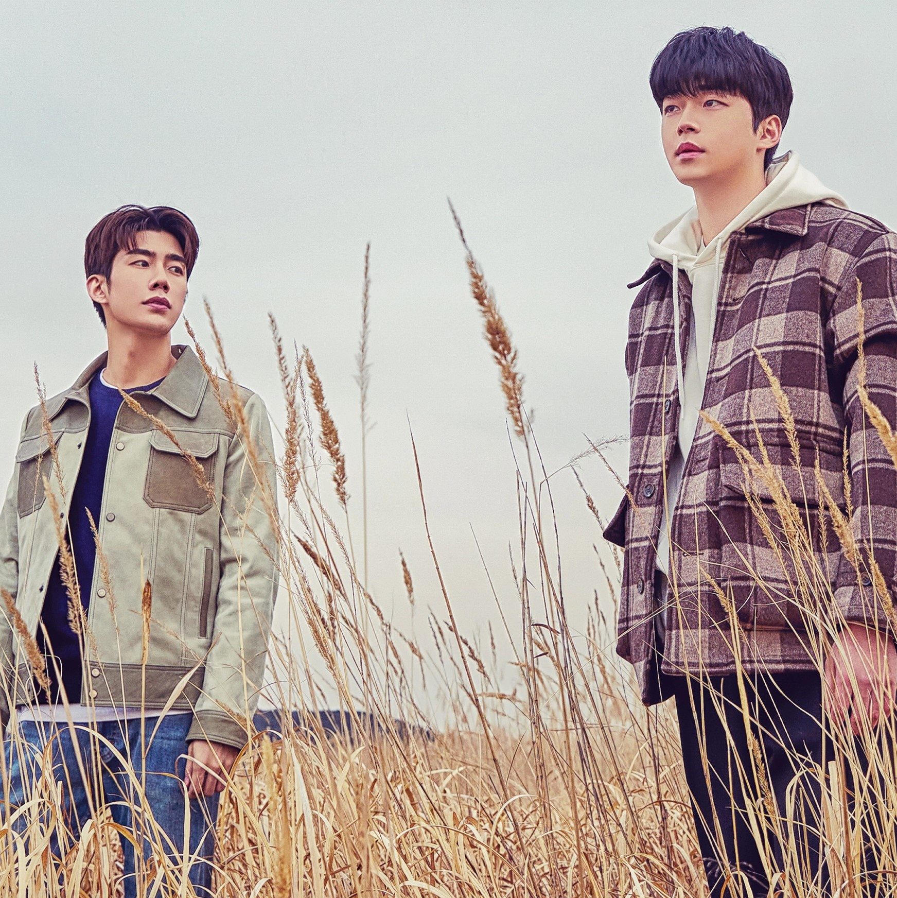
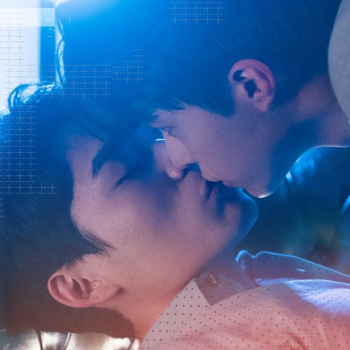
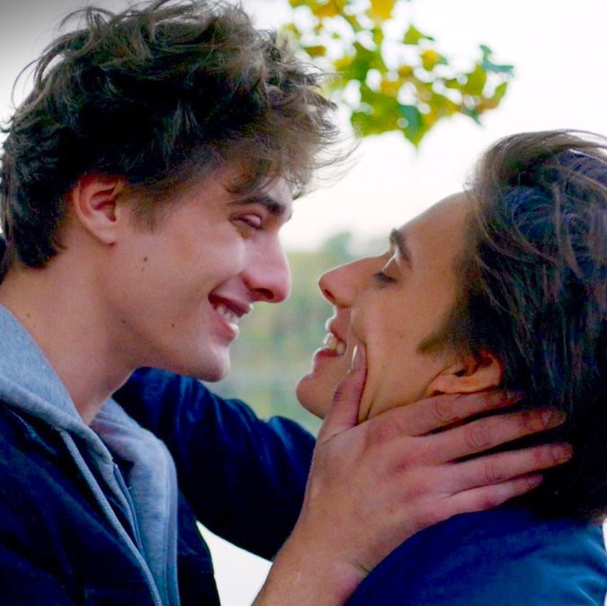

All the shows you need to cry, love, and wonder "when is it my turn".

To My Star has captured my heart for the past month as this show takes you through the journey of a love story between a famous actor (Kang Seo Joon) and a chef (Han Ji Woo) working in a low class restaurant. There are two seasons of the show that display the ups and downs of dating along with coming to terms with sexuality and all the feelings of finding "the one". I would die to have a man like Kang Seo Joon because a famous man who is rich, hot, and is obssesed with me would make have such a god complex. I truly believe this man would cure my depression. This show made me feel the love and left me wondering when is it my turn to be in a happy relationship where a man doesn't treat me like shite.

Plus and Minus was a targeted ad to me on Instagram and all I saw was two hot men abnout to kiss and it was game over. I immediately subscribed to the Viki streaming service and this show made me want to die because of how much I wanted to be in their relationship. These two friends since childhood have always had a strong relationship and now work with each other as sucessful divorce lawyers, but eventually feelings come out and they take a journey down love. I also wanted to off myself because Fu Li Gong reminds me so much of my recent ex and it made me spiral for a hot minute, but Zheng Ze Shou made me feel safe with his muscular body. This show had me wanting more after each episode and also so angry becasue of the several cliff hangers, but I have to give it to Asian dramas because they know how to capture an audience. Also, there is a side couple but I literally don't pay attention to them.
Junjo Romantica was the first BL anime I ever watched at the ripe age of 10 years old. The show follows 18 year old Misaki Takahashi and 28 year old Akihko Usami where they show how end up living together and ultimately falling in love. The first season has a good amount of NSFW content which my 10 year old mind was unaware of but over the three seasons it dies down and focuses more on their connection to one another. This show set my unrealistic expectations for a man as Akihko is a millionaire, stunning, only invested in Misaki, and is an award winning author. I would be too powerful for this world if I had a man like him because I would let it go to my head and I would be happy 24/7.
HeartStopper has caught the world by storm of this cute relationship between two high schoolers. We have Nick Nelson and Charlie Spring who meet in class one day and they find a wholesome connection to make them good friends, but eventually NIck starts to realize his feelings towards Charlie are more than just platonic. Nick Nelson is a proper English man who knows how to treat you right, communicate his feelings, and always takes your feelings into account. I genuinely loved this show and cannot wait for season 2 as every episode made me wish I could feel this loved but no I am just a dumb clown. I genuinely cried like four times throughout season one because I felt so lonely...
Skam Italia was first introduced to me through a good friend and personally I religiously watch season 2 as that is the gay season which I will mainly focus on. This show follows teenagers throughout their lives and romantic interest with each season being dedicated to one character. Season 2 follows Martino Rametta who is realizing his sexuality as Niccolò Fares transfers into the school and becomes his love interest where they have a complex journey of both having girlfriends but ultimately wanting each other. This season also covers mental disorders which is a a major plus on my end as it shows the ugly side of having to fight your mind to try to be good for the person you love. I have binged watched this show and excessive amount of times now that I know a good amount of Italian now. The love between the two makes your heart melt and makes you want to cry and punch a wall all at the same time. Also, the actors are honestly so good looking.

Skam France is a varation of the series Skam just as is Skam Italia which also follows teenagers through their lives but takes place in France with different actors. Season 3 is the gay season which follows Lucas Lallemant, once again discovering his sexuality as Elliot Demaury transfers into school. This variation is my second favortie and is worth watching as there are some differences on how they tackle the story and I mean they are two cute guys who you can't help but love. Elliot also portrays mental health issues and attempting to overcome them in order to make the person you love feel loved as well. There are so many cute moments that made me so sad because I am so lonely.